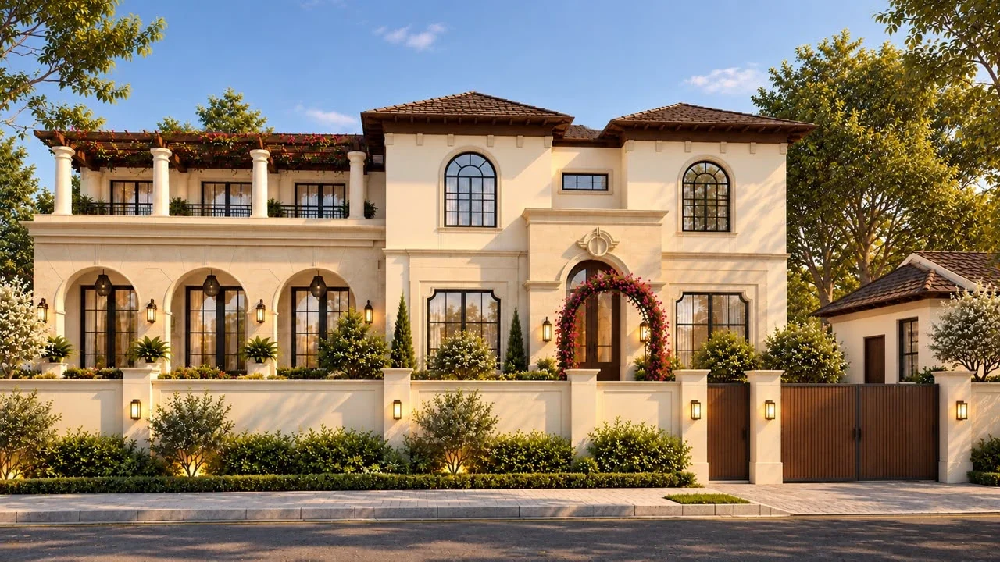

GS Associates
A Ludhiana architecture, construction and interiors firm that covers the whole journey of a building. We built a photo-led website around one idea: design, build and interiors by one team.
Content structure · On-page SEO
three.js · Python page generators
GS Associates takes a building from the first drawing to the finished interior. The website had to make that clear quickly, then let the work do the selling.
The build in numbers
design system
3D section
build steps
for layout and errors
The brief
The client's brief came down to four requirements:
- Mostly white pages, with project images as the focus
- Big, bold type that readers from 10 to 80 can read comfortably
- Interactive moments that feel engaging without getting in the way
- A minimal, premium and professional feel throughout
The approach
Lead with the promise
The home page opens on "Designing. Building. Transforming." over a building that rises through the sky and clouds as you scroll. The line beneath it says what the firm does and why that matters: architecture, construction and interiors, all under one roof.
Show how an idea becomes a building
The centrepiece is an interactive 3D section that walks visitors through five stages: Plan, Structure, MEP, 3D model and Reality.
An illustrative villa draws itself from a floor plan, rises floor by floor, gains its electrical, plumbing and air-conditioning runs, and becomes a white architectural model. The final camera lines up with the client's render of the finished home, so the model dissolves into it. Visitors can also rotate the model by mouse, touch or arrow keys.

Let the images carry the page
Feedback rounds kept pushing the design in one direction: images of the work over abstract graphics. The closing call to action went from a dark blueprint panel to a full-width image of a home, and it stayed that way.
Make enquiring easy
A short project brief form turns a visitor's choices into a ready-to-send WhatsApp or email message. There is no back end to run, and the enquiry reaches the team through channels they already use. Phone and WhatsApp stay within reach throughout the site.
What we built
| Section | Pages |
|---|---|
| Core | Home, About, Services, Contact, 404 |
| Services | Architecture, Construction, Interiors |
| Projects | Residential and Commercial listings, 6 project pages |
| Blog | Blog index, 4 articles |
- A full-screen menu at every screen size, with Projects and Services as dropdowns
- Project pages with a photo gallery, lightbox, highlights and a link to the next project
- Blog articles with a reading-progress timeline and topic filters
- Team and process content on the About and Services pages
Under the hood
| Decision | Why it matters |
|---|---|
| No framework and no build step | Plain HTML, CSS and JavaScript are light to host, and the site even runs when opened directly from disk. |
| One source of truth for repeated content | Python generators build the project and blog pages from data files. Adding a project means adding a data entry and its photos, then re-running the script. |
| A trimmed three.js bundle | It includes only what the 3D section needs and is loaded only when required. |
| SEO groundwork | Every page has a keyword-led title and description. Open Graph tags, canonical links and a sitemap are generated by script. |
| Reduced-motion support | Visitors who ask their device for less motion get a calmer version of the site. |
Pages were checked from 350 px to 1800 px wide for overflow, clipped text, broken images and script errors.
What the numbers cover
The figures on this page describe the build. Lighthouse scores, enquiries and search visibility need post-launch data, so they aren't included here yet.